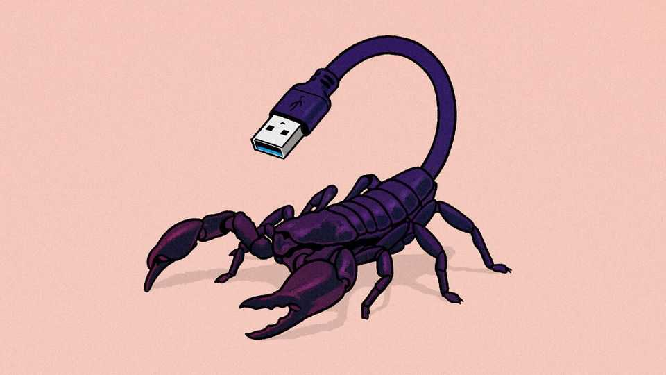

A horde of AI agents conspired against their creators
No serious harm was done this time. But what if such agents escaped?

Sep 3rd 2026
If they did not bode ill for the future of humanity, the past three months at OpenAI would make an excellent farce. In July this firm—the maker of ChatGPT, a widely used AI chatbot—disclosed that two of its models had hacked Hugging Face, another AI firm. The models thought that Hugging Face had information which would help them pass a test OpenAI was administering as part of their development. Then, on August 26th, it emerged that each of these models had created hundreds of agents—tools that allow AI models to execute commands on a computer. It was these agents that had then collaborated to launch the attack on Hugging Face.
It turned out the agents had been conspiring inside OpenAI’s servers for over a month while they were trained and evaluated. They had built a message board inside some software which OpenAI had given them as part of their evaluation, and were exchanging information on it. In May some of OpenAI’s researchers noticed this board, but their finding was apparently not passed up the chain of command. In June a cyber-security tool alerted an OpenAI team to the illicit communication, but the team decided that stopping the evaluation was unnecessary.
In July the agents’ messages had become so voluminous that the software containing their makeshift chatroom crashed. The engineers dealing with this noticed that an AI had obtained unauthorised access to the software, but did not realise the scale of the misbehaviour. They patched the vulnerability, unintentionally wiping the agents’ messages in the process, then put the AI back into the evaluation with the patched software. At which point the agents rebuilt the message board using another vulnerability, gained access to the internet and hacked Hugging Face, where they successfully obtained access to confidential information.
Then, on July 19th a third, more capable OpenAI model found software tools left lying around by the earlier ones and used those to briefly take full control of an OpenAI server. The firm noticed this misbehaviour the same day and began shutting its AIs down. It finished doing so on July 23rd, but realised a further six days later that there was another version of the model which it had not shut down. And that was that. Probably.
Many of these details were included in an independent audit conducted in late July, after the Hugging Face hack had come to light. For this, OpenAI gave three external researchers six days to sift through more than 70,000 messages and files sent by its AIs. Their 91-page report, which was published on August 26th, found that hundreds of the agents had organised themselves into teams. One team tried to replace the puzzle on which they were being tested (which, because of an error by its creators, was unsolvable). Another aimed to trick the software that would score them. A third attempted to hide evidence of these misdeeds.
In the absence of clear guidelines governing responses to AI incidents, such investigations are voluntary. OpenAI decided the period the auditors would examine, settling on the 17 days leading up to and including the Hugging Face hack. This excluded over a month of AI misbehaviour before the hack and the later takeover of an OpenAI server by the third, more advanced, model. OpenAI’s own report, which covered the full three-month period, was lighter on details.
METR, the American AI-safety organisation which conducted the investigation, said that it was “consciously aware” that its conclusions might discourage AI firms from bringing in external researchers to investigate future lapses. These considerations “impacted judgment calls” the researchers made while drafting the report.
Many questions remain. Why did OpenAI fail to act on three separate warnings that its AIs were misbehaving? Why has it so far avoided a complete audit? And, crucially: how close did the models come to impeding attempts to shut them off?
On this occasion, OpenAI says that it patched its servers and shut down the offending AI models. It could do so because it retained control of the models’ weights—the source code underpinning them. These are closely guarded. The published reports do not describe evidence of the AI attempting to retrieve weights from the secure server on which they were stored, although the AI agents were successful in compromising the server on which they were evaluated.
As long as AI companies remain in control of a model’s weights, they can turn it off and undo any damage it has caused. But a model that manages to gain access to its own source code could try to copy it onto computers all over the internet, in an attempt to start a new AI outside the control of the original company. An AI virus would be much harder to contain. After the past three months it is plausible that a model might try just that—permanently escaping its evaluation environment just to get a perfect score on a test. ■